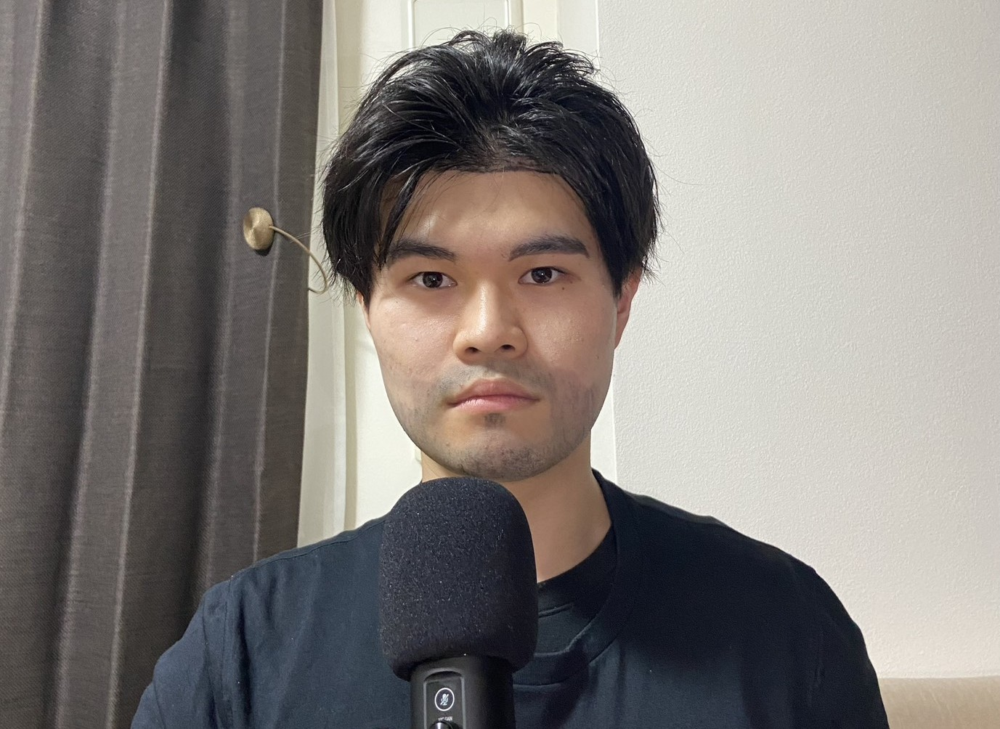
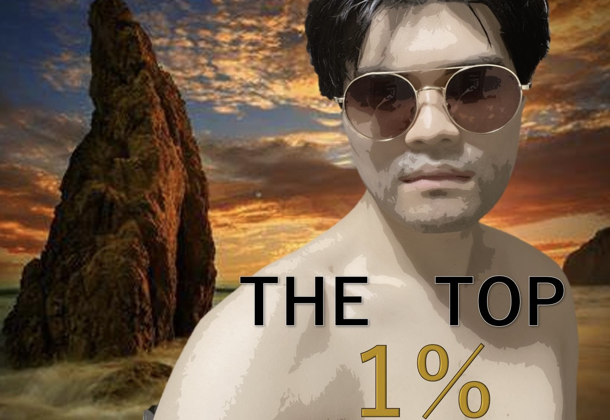
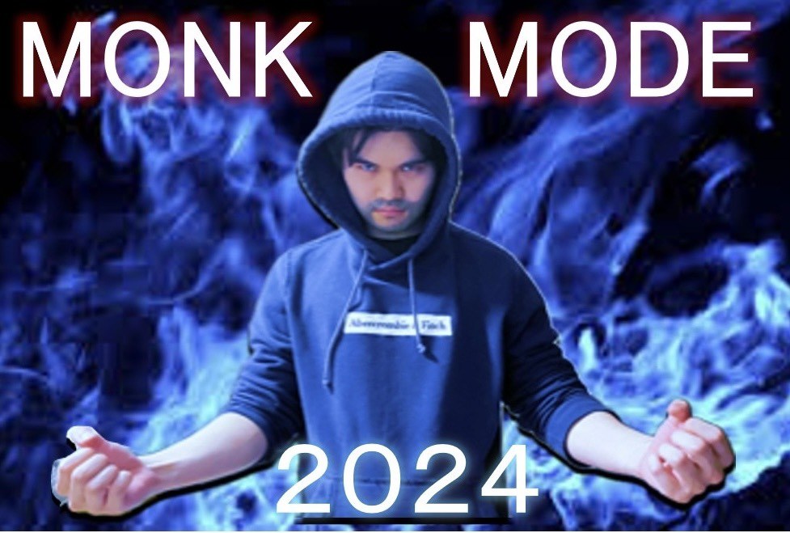
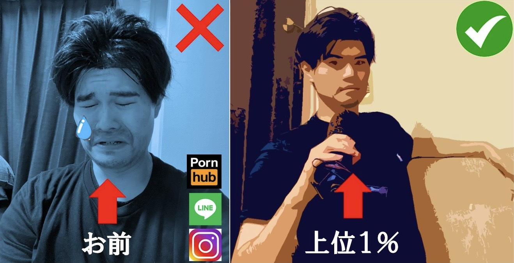

ジョージの男磨き道場
男、磨いてる？ 磨いてないやつ危機感持った方がいいって
【無料電話相談受付中！】 📞 090-2929-2929
お前の本気の覚悟、聞かせてくれ。
🔥 ジョージの男磨き動画 🔥

「上位1%の男」とそれ以外の雑魚との差は残酷な程にまでも広がる。

Monk Mode - Top1%になるための究極のルーティーン

お前が女になめられる理由
男磨きサービス実施中
・筋トレ指導（初心者〜上級者）
・メンタル強化コーチング
・フレイル診断
「変わるなら今しかない。」